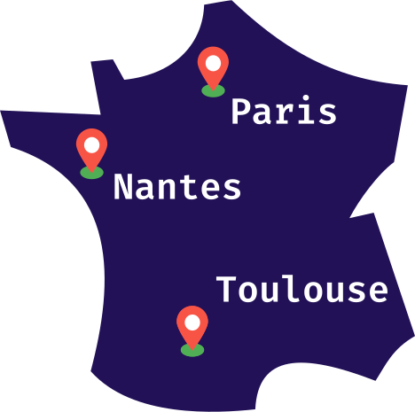
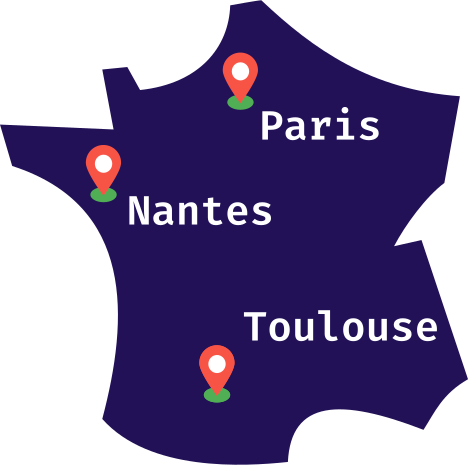
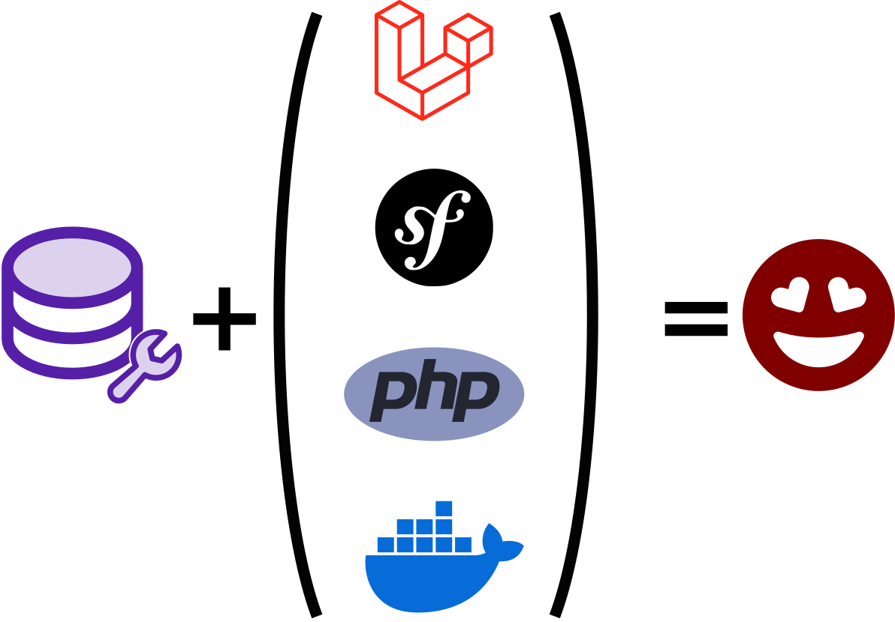

Don't leave your production data lying around: anonymize it with
DbToolsBundle
Simon Mellerin
- üßë‚ÄçüíªÔ∏è ¬∑ Web developper ¬∑ PHP/Symfony ¬∑ Vue.js
- üó∫Ô∏è ¬∑ from Nantes, France
Makina Corpus
 

Makina Corpus
-
 Services
Services
-
 Products
Products
-
 Training
Training
DbToolsBundle
Anonymization
Roadmap
Contribute
Anonymize? ü§î
DbToolsBundle
Built from real-world needs
DbToolsBundle
Try to address 3 common issues:
- Easily configure data anonymization
- A simple anonymization workflow
- Making anonymization fast
DbToolsBundle
A set of Console Commands
-
 Backup
Backup
db-tools backup -
 Restore
Restore
db-tools restore -
 Anonymize
Anonymize
db-tools anonymize -
 Display statistics
Display statistics
db-tools stats

DbToolsBundle
Works on top of most popular Database vendors:


Performance
Try it on our benchmark app:
4 Database connections
(PostgreSQL, SQLite, MySQL, MariaDb)- 3 Entities to anonymize
- Customer: email · password · lastname · firstname · age
- Address: a complete postal address (5 fields)
- Order: telephone · email · amount · note
Performance
| Customer | Address | Order | PostgreSQL | SQLite | MariaDB | MySQL |
|---|---|---|---|---|---|---|
| 100k | - | - | ~5s | ~7s | ~20s | ~53s |
| 1 000k | - | - | ~16s | ~16s | ~1m 23s | ~36m 56s |
| - | 200k | - | ~6s | ~10s | ~26s | ~42s |
| - | - | 1 000k | ~16s | ~11s | ~1m 15s | ~25m 1s |
| 100k | 200k | - | ~7s | ~10s | ~32s | ~1m 16s |
| 100k | 200k | 1 000k | ~24s | ~25s | ~1m 40s | ~36m 47s |
Performance
- Anonymizing with SQL only
- One update query per table
- Build with a complete query builder
Flavors

Flavors

user@prod:~$ vendor/bin/db-tools anonymize --local-database
user@prod:~$ php bin/console db-tools:anonymize --local-database
user@prod:~$ docker compose run dbtools anonymize --local-database

user@prod:~$ php artisan db-tools:anonymize --local-database
DbToolsBundle
Anonymization
Roadmap
Contribute
Setting Up Anonymization
Map each table's column you want to anonymize with an Anonymizer.
Setting Up Anonymization
# db_tools.config.yaml
anonymization:
default:
customer:
email_address: email
password:
anonymizer: password
options: {algorithm: 'sodium', password: '123456789'}
level:
anonymizer: string
options: {sample: ['none', 'bad', 'good', 'expert']}
age:
anonymizer: integer
options: {min: 10, max: 99}
#...
With YAML, from a list of various anonymizers
Setting Up Anonymization
On Doctrine Entities, from a list of various anonymizers
namespace App\Entity;
use Doctrine\ORM\Mapping as ORM;
use MakinaCorpus\DbToolsBundle\Attribute\Anonymize;
#[ORM\Entity()]
#[ORM\Table(name: 'customer')]
class Customer
{
#[ORM\Id]
#[ORM\GeneratedValue]
#[ORM\Column]
private ?int $id = null;
#[ORM\Column(length: 180, unique: true)]
#[Anonymize(type: 'email')]
private ?string $emailAddress = null;
#[ORM\Column(length: 180, unique: true)]
#[Anonymize(
type: 'password',
['password' => '123456789']
)]
private ?string $password = null;
#[ORM\Column]
#[Anonymize(
type: 'integer',
options: ['min' => 10, 'max' => 99]
)]
private ?int $age = null;
#[ORM\Column(length: 255)]
#[Anonymize(
type: 'string',
options: ['sample' => ['none', 'bad', 'good', 'expert']]
)]
private ?string $level = null;
#[ORM\Column]
private ?\DateTime $lastLogin = null;
// ...
}
Setting Up Anonymization
Check your config with:
db-tools anonymization:dump-config
Table: customer
---------------
----------- ------------ ---------------------------------------------------------------------------------
Target Anonymizer Options
----------- ------------ ---------------------------------------------------------------------------------
email email
password password
lastname lastname
firstname firstname
age age min: 10, max: 99
level string sample: [none, bad, good, expert]
----------- ------------ ---------------------------------------------------------------------------------
A GDPR-friendly workflow


user@prod:~$ db-tools restore --list
user@preprod:~$ scp user@prod:/path/to/prod.dump /tmp/prod.dump
user@preprod:~$ db-tools anonymize /tmp/prod.dump
user@local:~$ scp user@preprod:/tmp/prod.dump /tmp/prod-anonymized.dump
user@local:~$ db-tools restore --filename /tmp/prod-anonymized.dump
Custom Anonymizers
namespace App\Anonymizer;
use MakinaCorpus\DbToolsBundle\Anonymization\Anonymizer\AbstractAnonymizer;
use MakinaCorpus\DbToolsBundle\Attribute\AsAnonymizer;
#[AsAnonymizer(
name: 'my_anonymizer', // a snake case string
pack: 'my_app', // a snake case string
description: 'Describe here if you want how your anonymizer works.'
)]
class MyAnonymizer extends AbstractAnonymizer
{
// ...
How does it work under the hood?
temporary alteration of your SQL schema
How does it work under the hood?
the SQL query in deep
UPDATE
"customer"
SET
"nom" = "sample_1"."value",
"civilite" = "sample_2"."value"
FROM "customer" AS "_target_table"
LEFT JOIN (
SELECT
"value",
ROW_NUMBER() OVER (ORDER BY random()) AS "rownum"
FROM "sample_1"
LIMIT 171224
) AS "sample_1"
ON MOD("_target_table"."_db_tools_id", 589)
= "sample_1"."rownum"
LEFT JOIN (
SELECT
"value",
ROW_NUMBER() OVER (ORDER BY random()) AS "rownum"
FROM "sample_2"
LIMIT 171224
) AS "sample_2"
ON MOD("_target_table"."_db_tools_id", 2)
= "sample_2"."rownum"
WHERE
"client"."_target_table" = "_target_table"."_db_tools_id"
;
DbToolsBundle
Anonymization
Roadmap
Contribute
Roadmap
-
Easy-to-configure datalist
(from csv, json...) -
Faker pack & languages packs
Pre/Post anonymization SQL queries
Whitelist conditions for rows
New core anonymizers
Other Database vendors ?
DbToolsBundle
Anonymization
Roadmap
Contribute
Contribute
- üì¢ ¬∑ Share
- Talk about it
- Star on Github
- ü™≤ ¬∑ Report
- Missing documentation
- Issues in code
- üßë‚Äçüíª ¬∑ Code
- Check for good first issues on Github
- Share your pack of anonymizers
We need you to make the DbToolsBundle awesome!